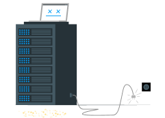

<div class="error-page">
    <template v-if="errorStatus === 404">
        
        <b>
            محتوا مورد نظر یافت نشد
        </b>
        <button @click="backButton()" class="back-btn">
            <span>بازگشت به صفحه قبلی</span>
            <IconBack style="width: 20px"/>
        </button>
    </template>
    <template v-else>
        
        <b>
            {{errorMessage}}
        </b>
    </template>
</div>
